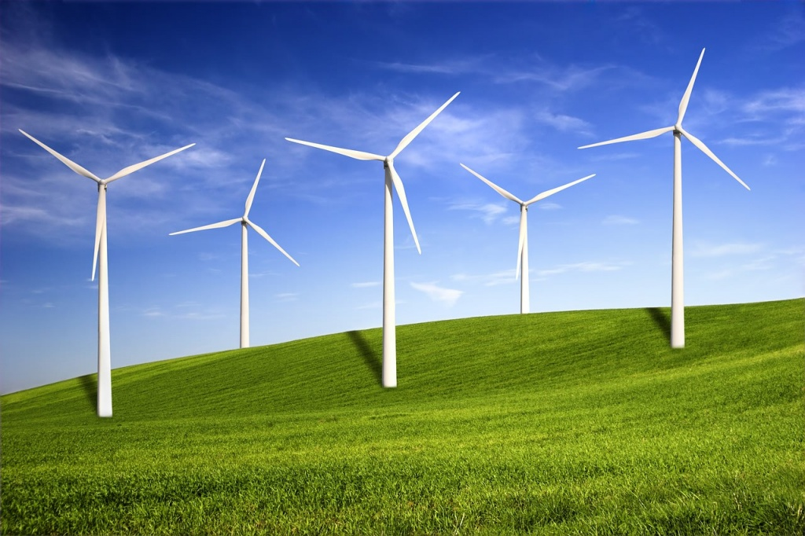
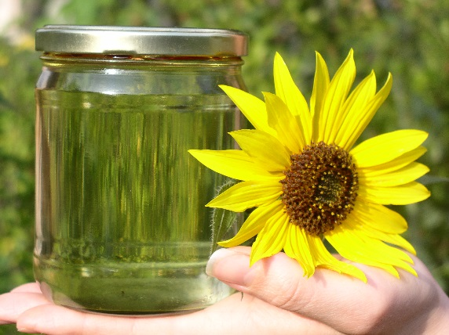
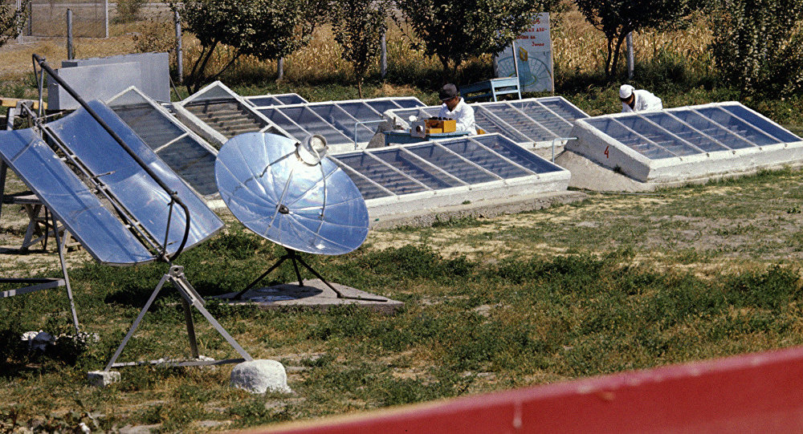
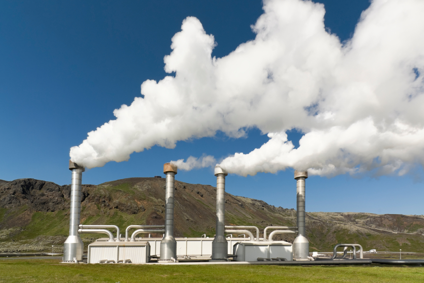
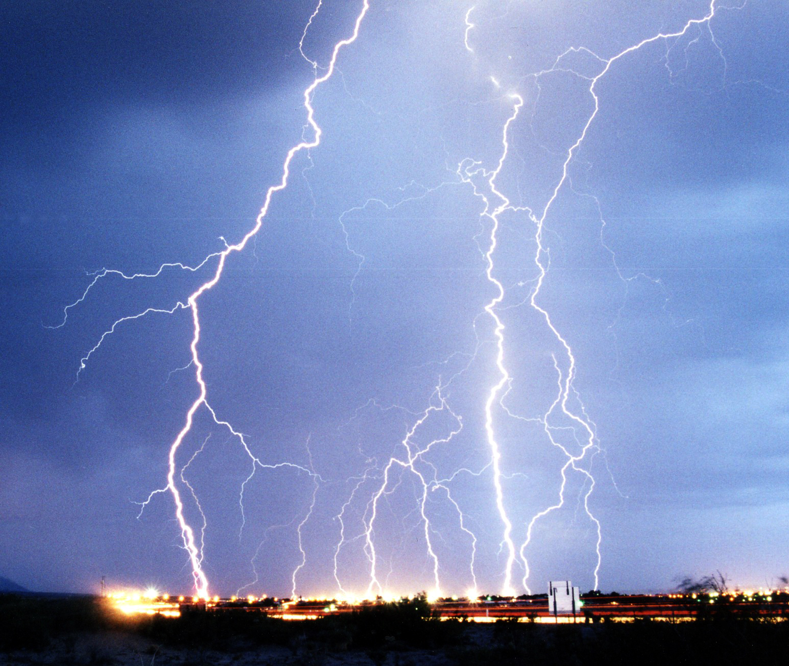

Альтернативная энергетика — совокупность перспективных способов получения, передачи и использования энергии, которые распространены не так широко, как традиционные, однако представляют интерес из-за выгодности их использования при, как правило, низком риске причинения вреда окружающей среде.
Ветроэнергетика
Биотопливо
Гелиоэнергетика
Геотермальная энергетика
Грозовая энергетика
Основным направлением альтернативной энергетики является поиск и использование альтернативных (нетрадиционных) источников энергии. Источники энергии — «встречающиеся в природе вещества и процессы, которые позволяют человеку получить необходимую для существования энергию». Альтернативный источник энергии является возобновляемым ресурсом, он заменяет собой традиционные источники энергии, функционирующие на нефти, добываемом природном газе и угле, которые при сгорании выделяют в атмосферу углекислый газ, способствующий росту парникового эффекта и глобальному потеплению. Причина поиска альтернативных источников энергии — потребность получать её из энергии возобновляемых или практически неисчерпаемых природных ресурсов и явлений. Во внимание может браться также экологичность и экономичность.